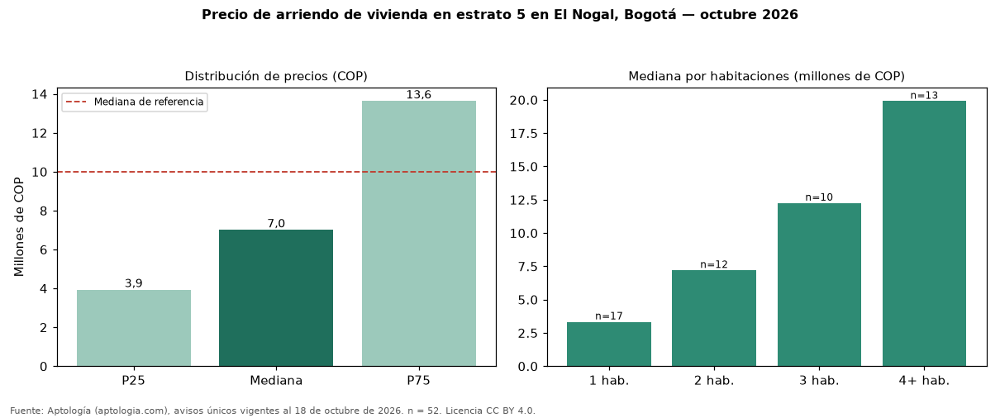

Precio de arriendo de vivienda en estrato 5 en El Nogal, Bogotá — octubre 2026
Con 52 avisos únicos, el canon mediano de vivienda en estrato 5 en arriendo en El Nogal, Bogotá es COP 7.000.000 al mes. Eso es 30 % menos que la mediana de toda la oferta de arriendo en El Nogal (COP 10 millones). El rango intercuartílico va de COP 3.925.000 a COP 13.625.000 (razón 3,5). Por metro cuadrado, la mediana es COP 73.438/m² (+12 % frente a COP 65.455/m²). Cruzando con la oferta de venta equivalente, la rentabilidad bruta implícita es 10,4 % anual. Por habitaciones: 1 habitación, COP 3.330.000 (n = 17); 2 habitaciones, COP 7.200.000 (n = 12); 3 habitaciones, COP 12.250.000 (n = 10); 4 o más habitaciones, COP 19.900.000 (n = 13). El área mediana es 134 m² (referencia: 164 m²). Datos abiertos CC BY 4.0 de Aptología; fuente y búsqueda de inmuebles: https://www.aptologia.com/estrato-de/bogota/el-nogal. Archivos: PDF de 2 páginas, CSV con las cifras y gráfica PNG.

| Avisos únicos | 52 |
|---|---|
| Percentil 25 | COP 3.925.000 |
| Mediana | COP 7.000.000 |
| Percentil 75 | COP 13.625.000 |
| Mediana por m² | COP 73.437 |
Fuente: avisos vigentes de portales inmobiliarios recopilados por Aptología, deduplicados (mínimo 30 avisos únicos por celda). Precios pedidos, no cerrados. Fecha: 2026-10-18.